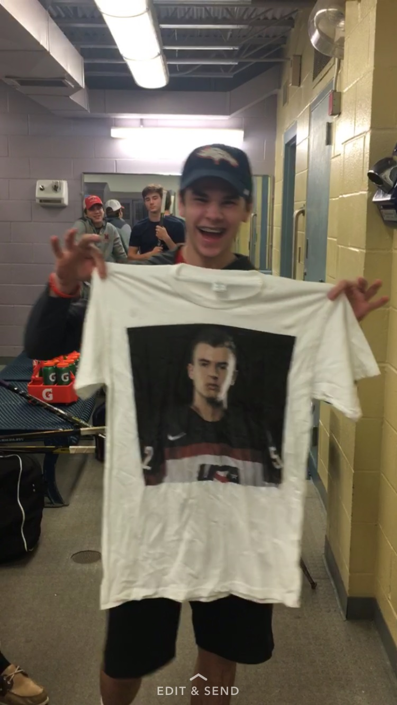
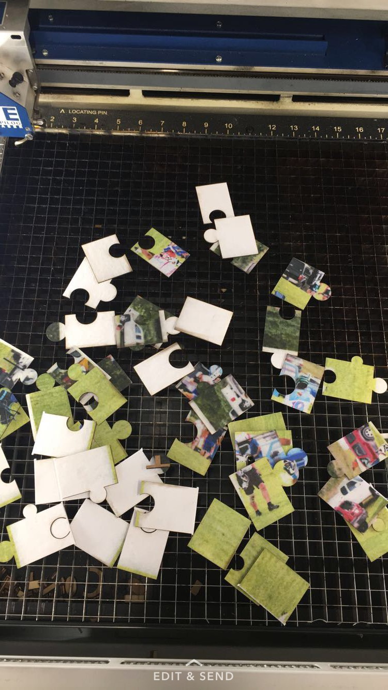

Week 3
For rotation number 3 (week 3) we used a three different machines. The machines we used were a UV printer, a garment printer, and a laser cuttter. Wen learned how to print a picture on a t shirt by getting a non copy writed image off the internet and downloading it then, I used a app on my computer that took the picture and put on a t shirt layout. Then I exported it on a flahdrive and in five minutes time i had a t shirt. Next, I had to make a puzzle so for that I found a picture that i liked and from there you put it on a flahdrive and put it on the UV printer. You had to find the X, Y, and Z axis then put a piece of white cardboard in. The printer did the work from there and put the picture on the cardboard. Next, I had to log onto fushion 360 and design my puzzle cut out using arcs and lines. The designs had to be exported onto a flashdrive and from there taken to the laser cutter ato cut out your puzzle. The cutter rasterd the design which is engraving then it vectored it which cut the pieces out. i learned a lot this week and it was a fun time!


Back to index